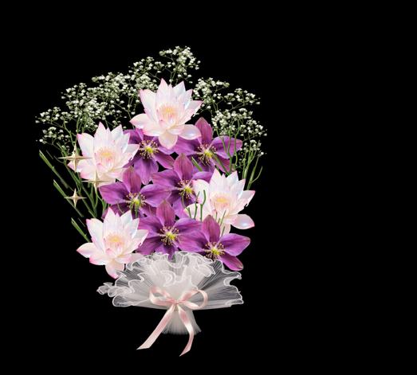
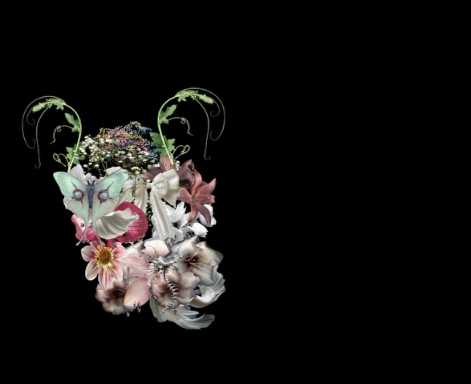
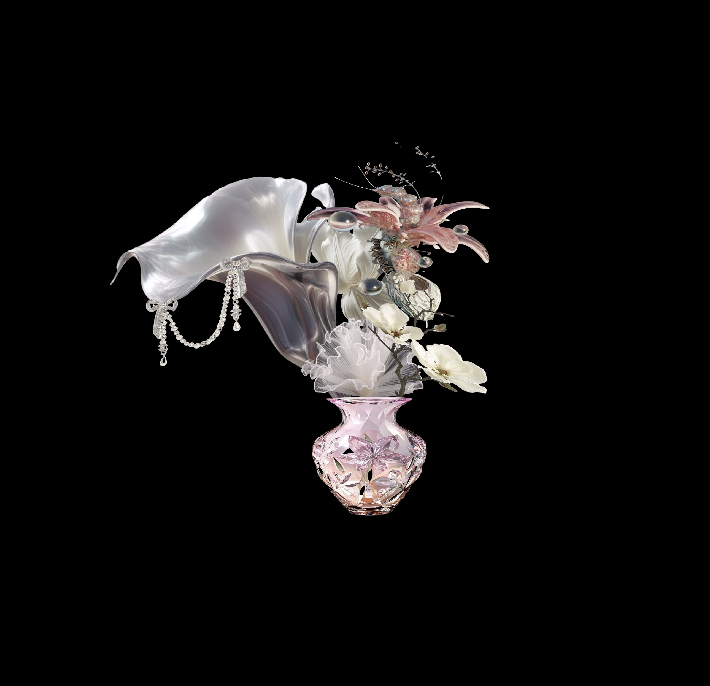
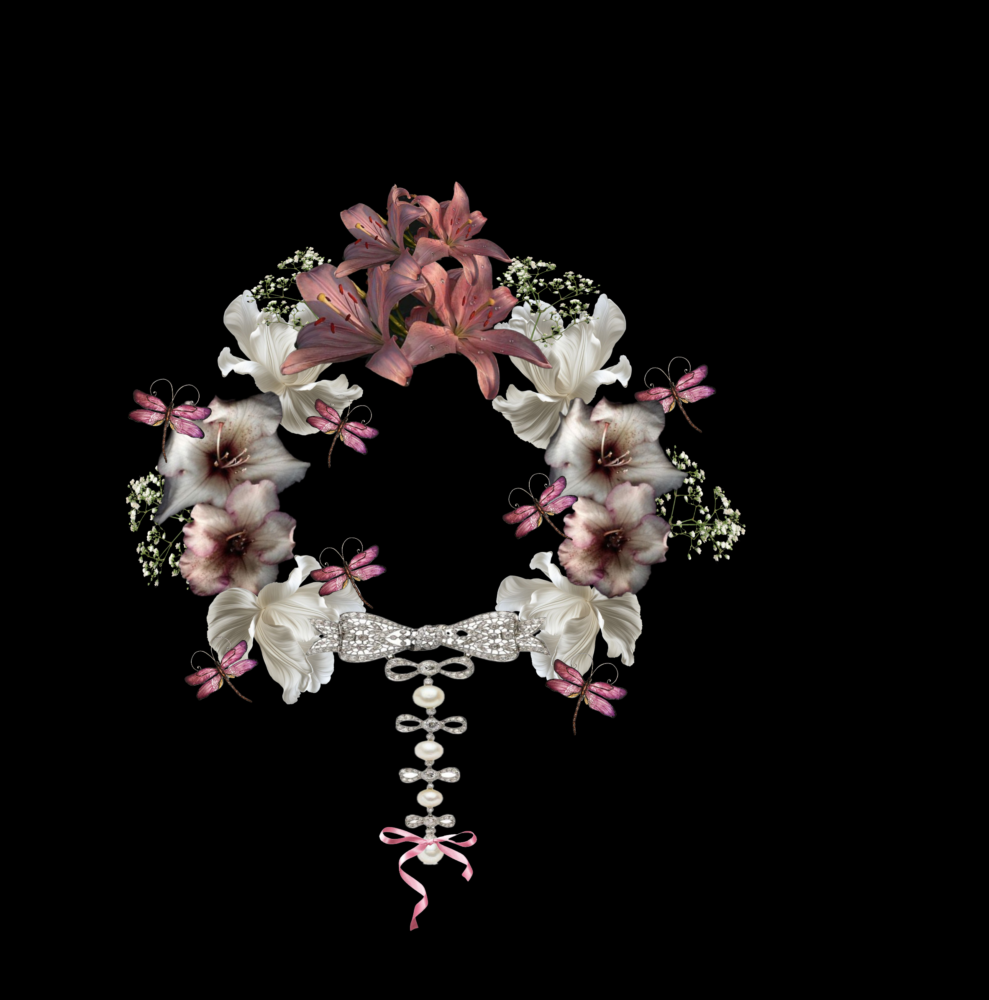
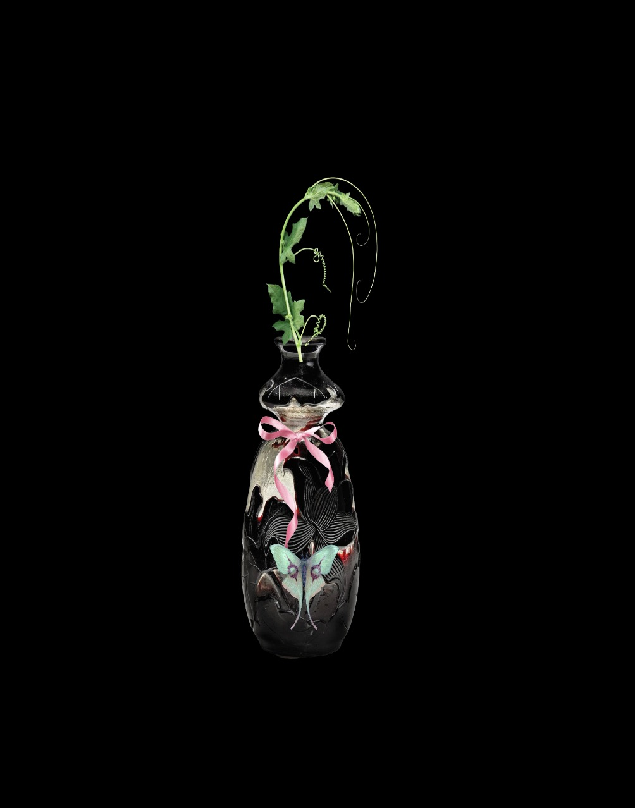
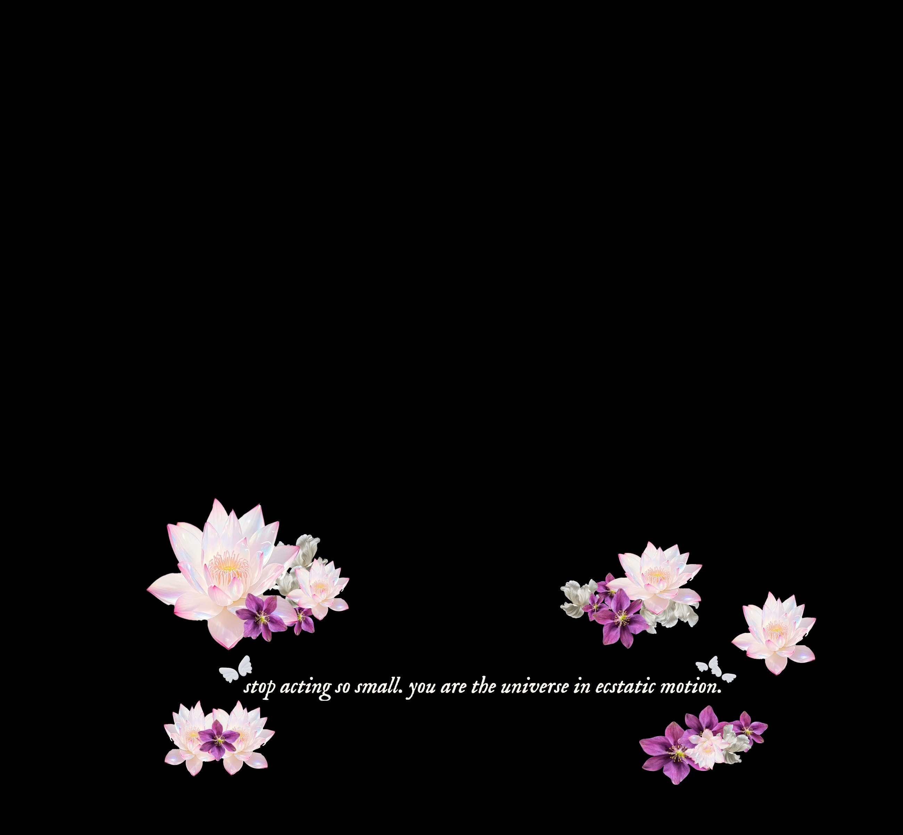
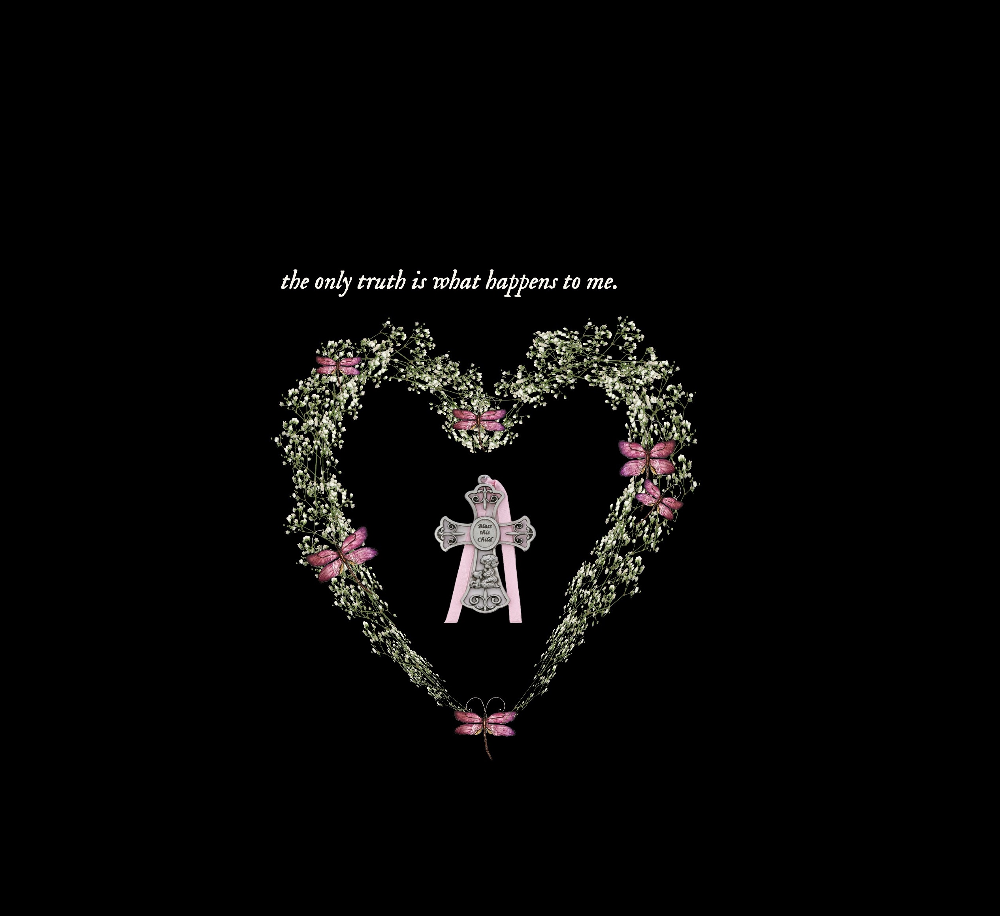
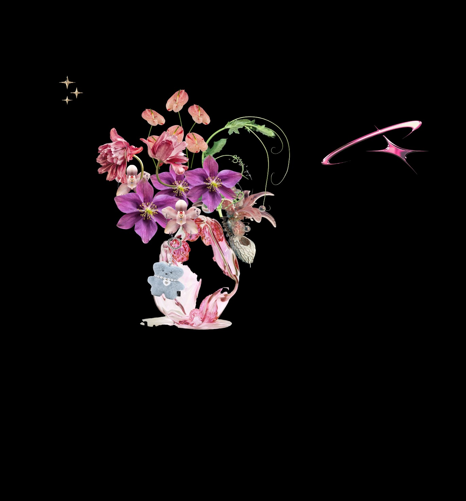
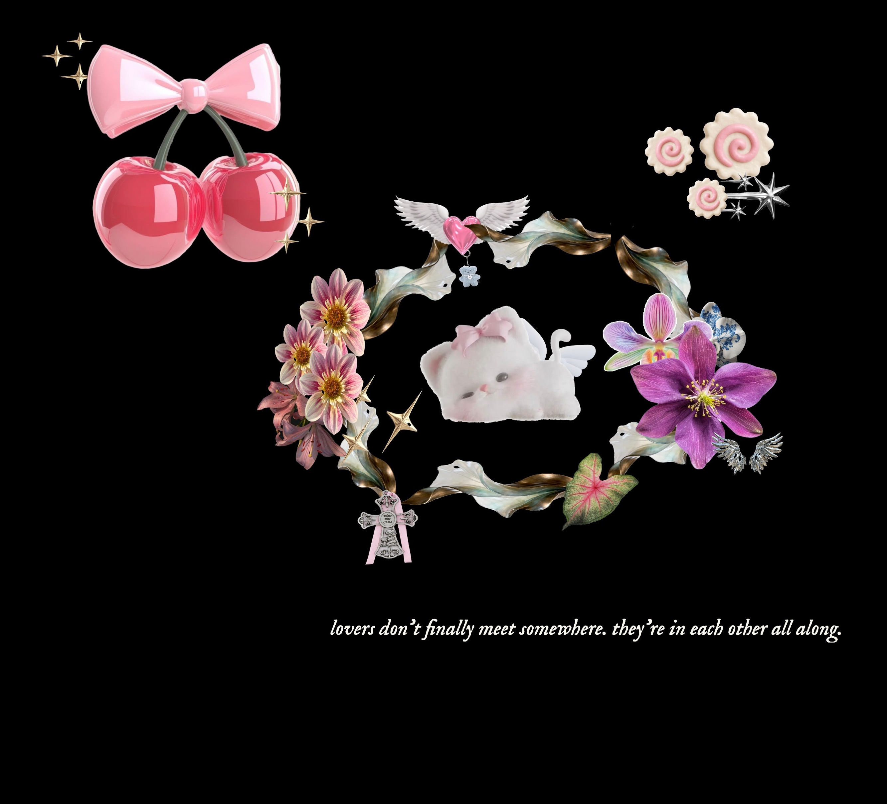

✿ Studio Work Index ✿
Introduction Excercise
Hi, my name is Sami (he/him). I grew up in Canberra and moved to Melbourne in 2020. I am intrested in visual design, production and film so i felt aligned to study this course at RMIT. My favourtie emoji is either the yellow love heart or the bouqet of flowers. I am comfortrable usuing Premire Pro, and visual studio code as i learnt the basics of it last semester in Interactive Media
Link to my Github☆・Studio Project Speculation ✧˚ · .
♦ Brief
My experiment intends to be a bouquet assembling tool where people can choose from a variety of different flowers to arrange and display their bouquet. I'm drawn to the idea of creative expression via colours, shapes, textures. Decoration / putting something together has always been a form of self expression I've connected to - the way people choose to set up something small tends to reflect themselves a lot more than we may think.
♦ Purpose
My creative tool will allow users to assemble a personalised bouquet by selecting and arranging flowers. The flowers will vary from traditional flowers to abstract shapes and versions of flowers (think metal, dried, plastic textures) . Through interaction, users can experiment with colour, shape, scale, and composition to create an arrangement that reflects their mood, identity, or aesthetic preferences. I want this tool to feel intuitive and playful, encouraging exploration rather than precision and positioning the user as an active creator through visual their choices to create somethibng of meaning.
♦ Worth
The values that guide this design tool would be self-expression, accessibility, freedom, exploration and emotional engagement. By prioritises creativity over functionality, it allows users to engage in a low pressure, open minded craft. The outcome values the variety of personal interpretation as some may go for a traditional ‘pretty’ bouquet or some may go for something more abstract or subversive, yet all are valuable journeys. It also aims to be inclusive by avoiding one ‘correct’ outcome, instead supporting diverse ways of creating and interpreting a flower bouquet. There's a similar tool/application I looked into online called Bloomy Joy. However it functions more as a professional tool / platform for designing bouquets with a drag and drop system. Has a large library of flower presets however focus tends to be more on efficiency planning and business not really as much on self expression.
♦ Framing
The project is a constrained but creative system, where users will work within a curated set selection of flowers, shapes, colours, and arrangement options (variety in texture, form and shape). This limit helps focus the experience more on building composition through different combinations rather than just having an overwhelming choice of designs. I want the tools to remain simple with basic actions such as selecting, layering, placing, decoration and re sizing, emphasising the project's aim for process and finding combinations over direct result. This will hopefully ensure an intimate creative space and experience.
♦ Experiment Examples
Tile Flipping Joy by Ash K has a similar use of having a constrained interaction to generate different expressive outcomes. It relates to my idea because it shares the similar path of using repetition and patterns to create something visually expressive. Meaning emerges through colour, placement, composition etc. This experiment influences mine by having a focus on the process rather than the outcome and has a nice level of control but also elements of un predictability.
Useless Paint Tool by StickTrix embraces playful making interactions. I connected with this as it felt like it functioned like a creative space for experimenting without pressure. Similarly, I want my tool to not feel like there's one answer that can exist, but a bunch of different identities and aesthetics that can work. While traditional tools tend to emphasise control and productivity, this project challenges those by encouraging playful outcomes.
A bit of a side step but another creative tool that I used to engage with a lot that I thought of while developing my concept is the Pokemon Team Planner. I grew up playing Pokemon games and as a Virgo I loved to plan out my teams before each run. I would go onto the Pokemon Team Planner website and spend hours playing around with creating different team compositions building visually around colours, aesthetics, shapes and sizes, mood etc. I was never into the ‘stats’ of the strongest characters, rather my teams were built on playful aesthetics, narrative and creative freedom. I guess this relates to my design tool by both having the principle of allowing users to select different shapes, colours, textures (in this case pokemon) to arrange a team (bouquet) that pleases their desires and feelings - enjoying the process and story telling and focusing less on the ‘best’ outcome.
Pokemon Team Planner˚꩜｡ Assignment 2 - Prototype Design ⋆‧°𓏲ּ𝄢
♦ Conceptual Response
This project explores digital expression through a personal form using a collage style bouquet assembling tool. Rather than functioning as a practical design application, the tool is framed as a visual toy, where users engage in open minded play by selecting and arranging themed flowers, decorations and symbols. The concept draws from the idea that small acts of assembly and decoration can reflect identity, mood, and aesthetic preference in subtle but meaningful ways. The project prioritises process over outcome, encouraging users to explore composition without pressure or predefined goals. The bouquet becomes less of a finished product but something that captures a moment of feeling or intention. The aim of the tool is to create a low pressure digital space that encourages intimacy, creativity, design and exploration.
♦ Technical Approach
The project is developed as an interactive tool using HTML, CSS, and JavaScript. The system is designed around a drag and drop model, where users can select elements from a curated library and position them within the defined canvas. Each flower is treated as a single visual component that can be layered, resized, and repositioned, allowing users to build compositions through simple, repeatable actions. This modular approach reflects the project’s conceptual focus on process, where infinite results arise from combining a limited set of elements. The interface is intentionally kept minimal to prioritise usability and focus attention on the act of making, interactions such as clicking, dragging, and layering are kept intuitive and responsive to maintain a sense of play.
♦ Project Timeline
- 1 - Concept & Planning
Define idea, research references, and outline core interactions (bouquet tool, expression focused).
- 2 - Prototype Development
Build basic functionality in VSC using Konva JS. Add initial flower assets + basic drag, place, layer elements.
- 3 - User Testing & Feedback
Peer testing reviews, gather feedback on usability, expression, and engagement and ways to optimise experience.
- 4 - Visual & Aesthetic Work (1-2 weeks)
From answers: refine layout, organise assets, improve aesthetic (colour, spacing, overall look, sound).
- 5 - Usability & Functionality (1-2 weeks)
From answers: Improve UI & UX, fix usability issues with layering, navigation, feedback and expand on features and assets.
- 6 - Finalisation & Presentation (1 week)
Get friends to test it out, keep polishing experience/final touches, present the final project.
♦ Peer Review + Reflections
The feedback gathered from user testing highlighted a generally positive response to the tool’s aesthetic and concept, while also revealing areas where usability and clarity could be improved on. In terms of the core function or intuitiveness, responses were mixed reflecting an average rating of 6.5/10. Although the core function is accessible, I think the tool would benefit from clearer guidance or onboarding instructions/subtle cues within the interface, the aim being to improve first time usability. Engagement time averaged 2–3 minutes, with most users approaching the tool as a simple collage maker. While I initially aimed to create a sense of ‘depth’ , this feedback tells me that complexity is not necessarily desirable, instead users value the ease of creating something visually appealing.
In terms of expression, responses varied with the order being A little bit > Maybe? > Yes > Not Really > Not at all. Some users were able to engage creatively while others felt limited. When asked, the styles produced (such as minimal, elegant, subcultural, pixilated, refined, random) demonstrate that the tool does support a range of outcome but in order to support this, expanding the asset variety and flexibility (scale, layering, colour variations) would better support the goal personal expression.
The key strength identified of my tool was the visual aesthetic, which was described as clear, cohesive and visually appealing - references were made to ‘coquette’ and ‘2010 we design’ styles which indicate to me that the visual direction is being communicated successfully. However some users suggested that small changes like having an option to change background colour or even upload an image would further support the aesthetic and experience. But when asked about what felt unintuitive or how they would change/enhance the tool, most consistent issues related to interaction limitations. This includes difficulty in layering, scrolling through assets, selecting assets and lack of feedback when interacting with elements.
To support a smoother experience, the next stage will be focused on improving usability and potential without overcomplicating the tool.
I plan to:
- Introducing a clearer UI structure, such as grouping assets by type, colour, or style
- Removing scrolling and replacing it with more intentional navigation (e.g. arrows or sections)
- Improving interaction feedback (cursor actions, visual or sound cues)
- Add essential features like layer control, delete, and save functions
- Refining asset design with varied default sizes and expanded options
- Add simple instructions or guide
Overall, this process has shifted my approach away from focusing on making a ‘deep’ tool, and instead focus on an intuitive and aesthetically driven experience. The goal is to allow users to quickly and comfortably create something visually meaningful, reinforcing the project’s core idea of expression through simple acts of digital arrangement.
Link to my prototype Link to my peer review form˚ Assignment 3 - Creative Tool Demonstration 𓏲ּ𝄢
Bouquet of Your Dreams (Link)This is my creative tool - Bouquet of Your Dreams
I created this tool to inspire new forms of love and manifistations guided by poems.
AI Acknowledgment
ChatGpt was used to help with the positioning of the functions within my tool and assit in the overall layout.
༄ Code Reflections 𓏲ּ𝄢
My initial purpose was to create a creative tool that encouraged users to communicate themselves through little acts of care rather than simply typing a message. I wanted the experience to feel very personal, reflective and expressive while remaining accessible to a wider audience. My final design definitely met the purpose and I think I surprised myself with how successful the visual element of the piece was. The webpage and the flower arrangements created turned out looking so much better than I initially thought.
The values in my tool included
- Care
- Creativity & Exploration
- Personal expression
- Accessibility
- Emotional connection
- Open play
- Low pressure environment
I tried to embed these values throughout my whole creative tool from planning phase, to prototype and the final version. To my pleasant surprise many friends and family told me that their experience with the tool was calming, low pressure and felt a personal connection to their bouquet. This was the best feedback to hear as it directly related to the intention I had when designing it. I think the unconventional assets chosen plus the click to spawn asset interaction were really strong points for this as they allowed people to freely compose bouquets without thinking of pre-existing traditions or rules, encouraging them to just click on whatever they were drawn to and try something new.
Every bouquet made was different from the previous, making it unique and special and each outcome is shaped by the user's memories, emotions and relationships. This by far was my favourite thing about the whole experience. I think this was successful because I kept design principles like open exploration and personal expression at the forefront, allowing users to create without a predetermined outcome. Another design principle I focused on was feedback. Rather than relying solely on functional feedback, I was interested in exploring emotional feedback through aesthetics and atmosphere. After testing my tool with my peers and talking with Patrick, I learnt the importance of functional feedback and its role in bringing this story to life.
I had to focus more on developing and refining the interactive elements responding to user actions through things like layering, transformation tools, hover states, mouse feedback and after some trial and error I ended up changing some of the core functions. Initially, users were required to click an asset and then drag it onto the canvas. It was a bit clunky and through peer testing and personal evaluation, I recognised that this interaction felt unintuitive and created unnecessary friction. I explored alternative approaches and ultimately implemented a spawning system where clicking an asset automatically generated a draggable copy within the canvas. This was a big improvement in usability, as it helped eliminate unnecessary action and prompted play while maintaining the creative flow of the experience.
During development, I was thinking of ways to upgrade the tool from just a collaging experience to a new experience by bringing a new aspect of creative expression. I initially had an idea of prompts; “make an arrangement on the emotion: uncanny”, this was okay but felt a little too contained for my idea. I ended up swapping prompts with quotes and leaning into the romantic ‘gift giving’ element of the piece. Quotes, especially ones from Persian literature are so open-ended and provide you with a feeling that can be explored and unpacked in infinite ways. The quotes initially appeared at the bottom of the canvas, while it looked neat, quote sizes varied and I thought this would softly force users to create their arrangement in a specific area of the screen. This went against some of my principles so I ended up having them generate in random positions across the canvas. This added more variety and opened up the effects of the feature, randomness aligned well with the open play I wanted the tool to feel like. The quote generator also enhanced the moments of reflection and inspiration, strengthening my values and how they were communicated.
♦ Project Timeline
The project was developed over several stages including concept development, prototype testing, implementation and refinement, to final outcome. Early stages focused on defining the visual identity and overall interaction model. I hadn't thought much about the depths and details of user functionality feedback and learnt that is a big part I need to improve on. Midway through the project, the majority of development time was spent working on this. I started by getting the assets organised in pages and re-rendering them for better quality. Then I worked on implementing codes using Konva for spawning assets, page navigation, layering, and resizing working along two canvases (assets and creation area). After adding the functions, the next phase was focused on beautifying/enhancing. I was really stuck on what page comes first (flowers or vases) as both versions felt right; you could go straight into your flower arrangement or pick a vase you like and build up from there. The current version I had supported the latter more, as layers were determined by order of choice. After improving the actual layering experience through code I decided to leave the flower page first for visual and branding purposes. The final phase focused on final additions and improving the overall ease of use. I added an introduction popup, drop down instructions button, cursor feedback on hovering flower, quote generator button and save image button with the option to have or not have your quote.
♦ What im most proud of
What I am most proud of is the way the interaction design supports the emotional concept behind the project. The bouquet building process feels playful and personal, while the integration of poetry and customisations creates opportunities for meaningful unique expression. I am really proud that the final outcome feels cohesive both conceptually and aesthetically, the way it looks and that all the intention behind it was successful. Seeing my friends and families bouquets made me feel really proud as they are all so beautiful and so them!
♦ Most challanging aspect
Balancing technical functionality with the intended user experience was an ongoing challenge throughout development.The layering system was challenging, I had multiple stages, pages and canvases to work with and each image asset was a different size, condensed to fit one size in the tool. With the amount of images I had, I found it difficult to find a system that felt really intuitive and easy to use and while it's not perfect, I think I did a good job in the end. Another really challenging part was getting the mouse to give feedback when navigating the page. I tried many code variations as I wanted the mouse to change image (like from an arrow to hand) when editing and using the transform / resize / rotate functions, or even when hovering over a button I wasn't successful in getting it to work. Although my code seemed okay, I couldn't figure out why the mouse wouldn't change - I think I might've had to fix up my HTML / CSS to support it. The same thing happened for the resizing page to window size, when I tried to code it in, the whole layout of my page got ruined and things were misplaced. I ended up just leaving it out as it was near the end of the deadline and that scared me too much, my page was so pretty and took a lot of effort to get it right. Ultimately, if I had more time to work on the project I believe I could have improved these problems.
♦ Contrast with a peers tool
I think Calvin's project provided an insightful contrast because it prioritised efficiency and task completion, whereas my project prioritised character and emotional expression. Comparing the two highlighted how different design judgements can emerge depending on the intended purpose of a tool. Both our tools shared the same core purpose of collaging but his project focused on having strong user clarity and optimisation, where my project focused more on atmosphere and personal interpretation. Comparing my work with his helped me better understand the relationship between design goals, interactions and therefore design decisions.
♡✧˚ ༘ Some of my nearest and dearsts first bouquet creations! ⋆｡♡˚
My mamas

My babas

My bestfriend Mayas


My boyfriends

Some of mine



